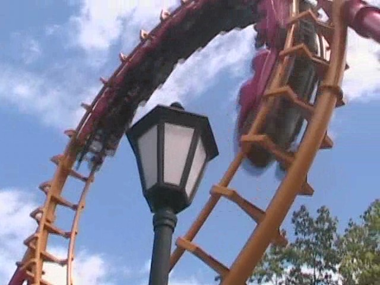

North of the Border Tour
Great Escape La Ronde Canadas Wonderland Michigans Adventure Six Flags Great America Kings Island Kennywood Knoebels Dorney Park
Well, my big trip of the year was here. It started out great with a suprise park which turned out to be the Great Escape.
That's great for Friends. But we don't care. We have credits to get.
Anyways, how else do you start a big trip other than immedietly getting your 100th Credit.
Of all the rides my #100 could've been, it had to be a Boomerang.

On a positive note, this is the best Boomerang I've ridden so far. There wasn't a single moment of roughness on the ride.
I'm not attracted to him or anything. I've just got nothing better to do.
 Up next was Canyon Blaster.
Up next was Canyon Blaster.
While the ride is completely crappy, at least it briefly sprinkled on our crappy ride.
 Finally! The real reason we bothered to come here!
Finally! The real reason we bothered to come here!
If you're a fan of airtime and sharp turns, then the Comet is a ride for you.
 This was so worth stopping off the side of the road to ride.
This was so worth stopping off the side of the road to ride.
After getting on Comet, Alpine Bobsled opened up for us.
This ride would've been alot more fun if it wasn't braked so heavily.
 Another low factor in the Alpine Bobsled was the fact that you had absolutely NO leg room.
Another low factor in the Alpine Bobsled was the fact that you had absolutely NO leg room.
Alpine Bobsled from the Ferris Wheel.
Just in case you forgot where we were, here's the sign. (Don't be emberresed if you actually forgot where we were. It's not like there's anything aside from Comet here.)
I'm not sure why, but it appears that people on this trip enjoy turning into midgets.
Does Disney know about this?
They have a condor at the Great Escape. But we didn't ride.
Instead we decided to get the final credit we needed here.
 Unlike the Boomerang, Steamin Demon is rough and craptacular.
Unlike the Boomerang, Steamin Demon is rough and craptacular.
 However, it wasn't so bad compared to the Arrow Death Machine at the other suprise park.
However, it wasn't so bad compared to the Arrow Death Machine at the other suprise park.
 Well, since we conquered the Great Escape, there was nothing left to do but to ride Comet til we had to get back on the bus.
Well, since we conquered the Great Escape, there was nothing left to do but to ride Comet til we had to get back on the bus.
Here you can see some of the sharp turns on the ride.
 This ride is filled with airtime unlike the crappy woodie at my home park. (Hopefully their 2009 woodie will change that.)
This ride is filled with airtime unlike the crappy woodie at my home park. (Hopefully their 2009 woodie will change that.)
 After realizing that we were doing nothing but riding Comet, the park closed early and we had to get back on the bus. But I enjoyed Great Escape and will someday come back for the Comet.
After realizing that we were doing nothing but riding Comet, the park closed early and we had to get back on the bus. But I enjoyed Great Escape and will someday come back for the Comet.
After learning that Deep Dish Pizza is the best food to eat after riding an awsome woodie, we had to eat at Unos.
I can do this amazing trick not because I'm talented, but because I'M GOD!!!
Yes, we will go to Oiho on this trip. But first, we're going to attempt to get past the border, and if we succeed, then we'll be in Canada!
La Ronde
Home